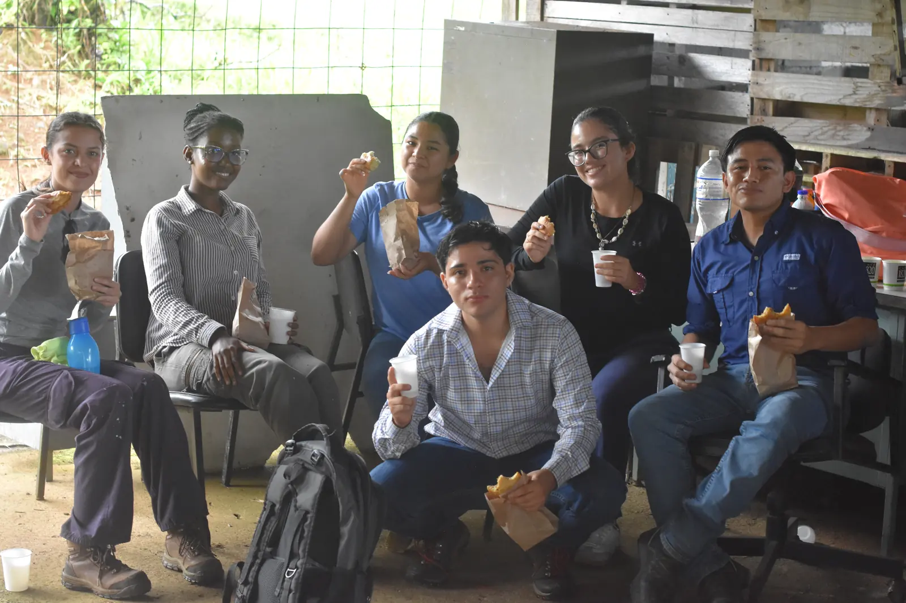
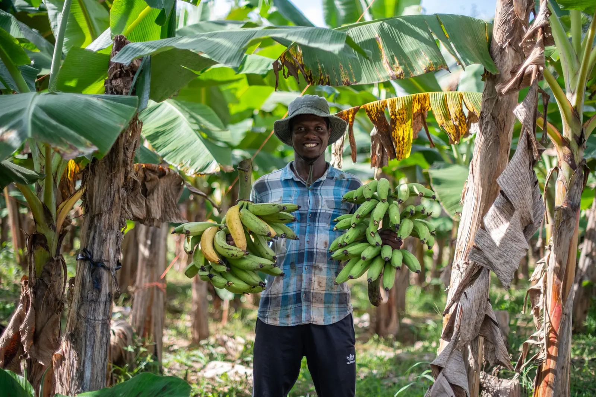

Responsabilidad Social Corporativa
Comprometidos con el bienestar social y ambiental en cada paso de nuestra producción.
Plan social externo
Impacto social, no acciones aisladas
En Platanera Oro Verde buscamos ser socialmente responsables en cada proceso de toma de decisiones y valorar el impacto de las acciones en las comunidades, de acuerdo con las líneas de acción estratégicas de la OPE. Queremos un proceso de impacto social, no acciones puntuales y aisladas: por eso trabajamos con grupos previamente organizados (ONG, municipalidades, asociaciones de desarrollo comunal, comités y otros).
En conversaciones con proyectos empresariales anteriores obtuvimos el contacto de la Lcda. Tatiana Angulo, administradora de la ASADA La Alegría, quien nos comentó que las familias de la zona no se concientizaban en el uso del agua y que además buscan visibilizarse mediante publicidad en redes sociales.

La actividad
Educación y concienciación sobre el agua
Tras un profundo análisis de necesidades e intercambio de ideas entre los socios, decidimos realizar una charla para que la comunidad tome conciencia sobre el buen uso y ahorro del agua en el hogar y en la colectividad: “Educación y concienciación a la comunidad: charlas para abonados y comunidad”.

{kind=link}
{kind=link}
Involúcrate
Únete a nuestras iniciativas y marca la diferencia con nosotros.
Escríbenos Síguenos en Instagram